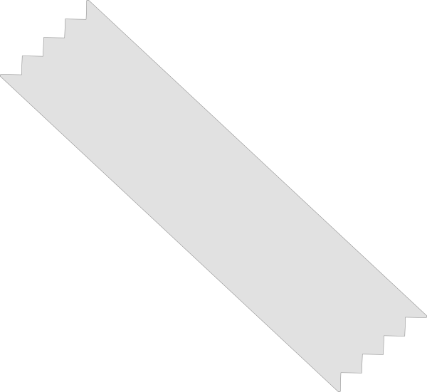

De boeken die jou gaan helpen bij jouw werkstuk
Hier vind je een selectie van boeken speciaal voor jouw onderwerp. Deze kan je allemaal lenen en lezen bij de OBA. Zit er een boek tussen die je niet wilt lezen? Verwijder deze dan uit jouw lijst. Zo weet je straks naar welke boeken jij op zoek moet in de bibliotheek.